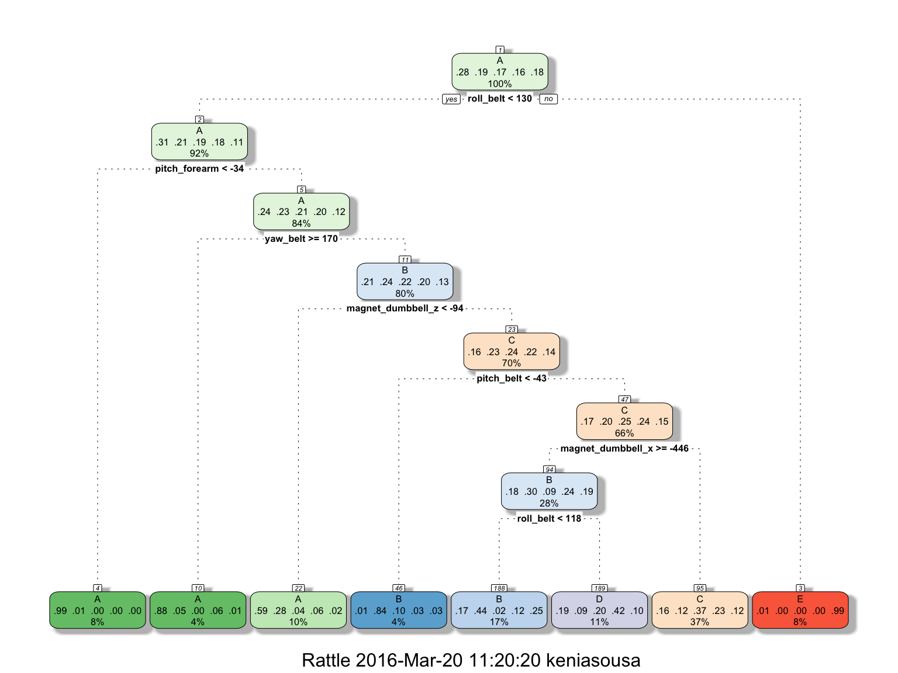
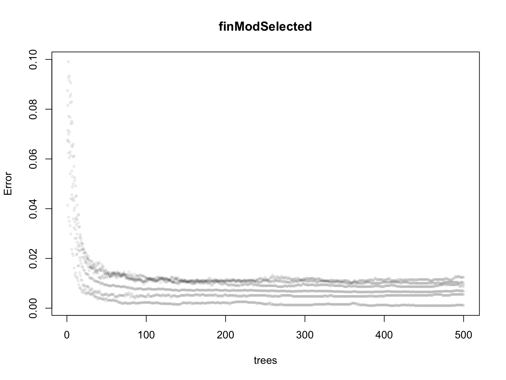

Using devices such as Jawbone Up, Nike FuelBand, and Fitbit it is now possible to collect a large amount of data about personal activity relatively inexpensively. These type of devices are part of the quantified self movement – a group of enthusiasts who take measurements about themselves regularly. One thing that people regularly do is quantify how much of a particular activity they do, but they rarely quantify how well they do it.
The data used is from accelerometers on the belt, forearm, arm, and dumbell of 6 participants. They were asked to perform barbell lifts correctly and incorrectly in 5 different ways. The goal of this project is to predict the manner in which they did the exercise.
More information is available from the website here: http://groupware.les.inf.puc-rio.br/har (see the section on the Weight Lifting Exercise Dataset).
The data are in the GitHub project and available in the links listed as follows:
The training data: https://d396qusza40orc.cloudfront.net/predmachlearn/pml-training.csv
The test data: https://d396qusza40orc.cloudfront.net/predmachlearn/pml-testing.csv
The first step is to load the data:
require(caret)
training <- read.csv("pml-training.csv", sep = ",", na.strings="NA")
testingAcc <- read.csv("pml-testing.csv", sep = ",", na.strings="NA") There are 19,622 observations and 160 variables in the training set.
There are 20 observations and 160 variables in the testing set.
dim(training)## [1] 19622 160dim(testingAcc)## [1] 20 160We know that the variable “classe” represents the manner in which the participants did the exercise, which will be the outcome.
Six young health participants were asked to perform one set of 10 repetitions of the Unilateral Dumbbell Biceps Curl in five different fashions:
Read more at: http://groupware.les.inf.puc-rio.br/har#ixzz42rOddXrC
So, we explore this variable “classe” and look at the distribution of values per classe in the training set.
levels(training$classe)## [1] "A" "B" "C" "D" "E"table(training$classe)##
## A B C D E
## 5580 3797 3422 3216 3607Looking at the structure of the data, it is strange to see that there are factor variables with several levels, some with 400 levels. From several tests done, there was even an error saying that Random Forest can not handle categorical predictors with more than 53 categories. And looking at the test set, the same variables are numeric.
str(training)## 'data.frame': 19622 obs. of 160 variables:
## $ X : int 1 2 3 4 5 6 7 8 9 10 ...
## $ user_name : Factor w/ 6 levels "adelmo","carlitos",..: 2 2 2 2 2 2 2 2 2 2 ...
## $ raw_timestamp_part_1 : int 1323084231 1323084231 1323084231 1323084232 1323084232 1323084232 1323084232 1323084232 1323084232 1323084232 ...
## $ raw_timestamp_part_2 : int 788290 808298 820366 120339 196328 304277 368296 440390 484323 484434 ...
## $ cvtd_timestamp : Factor w/ 20 levels "02/12/2011 13:32",..: 9 9 9 9 9 9 9 9 9 9 ...
## $ new_window : Factor w/ 2 levels "no","yes": 1 1 1 1 1 1 1 1 1 1 ...
## $ num_window : int 11 11 11 12 12 12 12 12 12 12 ...
## $ roll_belt : num 1.41 1.41 1.42 1.48 1.48 1.45 1.42 1.42 1.43 1.45 ...
## $ pitch_belt : num 8.07 8.07 8.07 8.05 8.07 8.06 8.09 8.13 8.16 8.17 ...
## $ yaw_belt : num -94.4 -94.4 -94.4 -94.4 -94.4 -94.4 -94.4 -94.4 -94.4 -94.4 ...
## $ total_accel_belt : int 3 3 3 3 3 3 3 3 3 3 ...
## $ kurtosis_roll_belt : Factor w/ 397 levels "","-0.016850",..: 1 1 1 1 1 1 1 1 1 1 ...
## $ kurtosis_picth_belt : Factor w/ 317 levels "","-0.021887",..: 1 1 1 1 1 1 1 1 1 1 ...
## $ kurtosis_yaw_belt : Factor w/ 2 levels "","#DIV/0!": 1 1 1 1 1 1 1 1 1 1 ...
## $ skewness_roll_belt : Factor w/ 395 levels "","-0.003095",..: 1 1 1 1 1 1 1 1 1 1 ...
## $ skewness_roll_belt.1 : Factor w/ 338 levels "","-0.005928",..: 1 1 1 1 1 1 1 1 1 1 ...
## $ skewness_yaw_belt : Factor w/ 2 levels "","#DIV/0!": 1 1 1 1 1 1 1 1 1 1 ...
## $ max_roll_belt : num NA NA NA NA NA NA NA NA NA NA ...
## $ max_picth_belt : int NA NA NA NA NA NA NA NA NA NA ...
## $ max_yaw_belt : Factor w/ 68 levels "","-0.1","-0.2",..: 1 1 1 1 1 1 1 1 1 1 ...
## $ min_roll_belt : num NA NA NA NA NA NA NA NA NA NA ...
## $ min_pitch_belt : int NA NA NA NA NA NA NA NA NA NA ...
## $ min_yaw_belt : Factor w/ 68 levels "","-0.1","-0.2",..: 1 1 1 1 1 1 1 1 1 1 ...
## $ amplitude_roll_belt : num NA NA NA NA NA NA NA NA NA NA ...
## $ amplitude_pitch_belt : int NA NA NA NA NA NA NA NA NA NA ...
## $ amplitude_yaw_belt : Factor w/ 4 levels "","#DIV/0!","0.00",..: 1 1 1 1 1 1 1 1 1 1 ...
## $ var_total_accel_belt : num NA NA NA NA NA NA NA NA NA NA ...
## $ avg_roll_belt : num NA NA NA NA NA NA NA NA NA NA ...
## $ stddev_roll_belt : num NA NA NA NA NA NA NA NA NA NA ...
## $ var_roll_belt : num NA NA NA NA NA NA NA NA NA NA ...
## $ avg_pitch_belt : num NA NA NA NA NA NA NA NA NA NA ...
## $ stddev_pitch_belt : num NA NA NA NA NA NA NA NA NA NA ...
## $ var_pitch_belt : num NA NA NA NA NA NA NA NA NA NA ...
## $ avg_yaw_belt : num NA NA NA NA NA NA NA NA NA NA ...
## $ stddev_yaw_belt : num NA NA NA NA NA NA NA NA NA NA ...
## $ var_yaw_belt : num NA NA NA NA NA NA NA NA NA NA ...
## $ gyros_belt_x : num 0 0.02 0 0.02 0.02 0.02 0.02 0.02 0.02 0.03 ...
## $ gyros_belt_y : num 0 0 0 0 0.02 0 0 0 0 0 ...
## $ gyros_belt_z : num -0.02 -0.02 -0.02 -0.03 -0.02 -0.02 -0.02 -0.02 -0.02 0 ...
## $ accel_belt_x : int -21 -22 -20 -22 -21 -21 -22 -22 -20 -21 ...
## $ accel_belt_y : int 4 4 5 3 2 4 3 4 2 4 ...
## $ accel_belt_z : int 22 22 23 21 24 21 21 21 24 22 ...
## $ magnet_belt_x : int -3 -7 -2 -6 -6 0 -4 -2 1 -3 ...
## $ magnet_belt_y : int 599 608 600 604 600 603 599 603 602 609 ...
## $ magnet_belt_z : int -313 -311 -305 -310 -302 -312 -311 -313 -312 -308 ...
## $ roll_arm : num -128 -128 -128 -128 -128 -128 -128 -128 -128 -128 ...
## $ pitch_arm : num 22.5 22.5 22.5 22.1 22.1 22 21.9 21.8 21.7 21.6 ...
## $ yaw_arm : num -161 -161 -161 -161 -161 -161 -161 -161 -161 -161 ...
## $ total_accel_arm : int 34 34 34 34 34 34 34 34 34 34 ...
## $ var_accel_arm : num NA NA NA NA NA NA NA NA NA NA ...
## $ avg_roll_arm : num NA NA NA NA NA NA NA NA NA NA ...
## $ stddev_roll_arm : num NA NA NA NA NA NA NA NA NA NA ...
## $ var_roll_arm : num NA NA NA NA NA NA NA NA NA NA ...
## $ avg_pitch_arm : num NA NA NA NA NA NA NA NA NA NA ...
## $ stddev_pitch_arm : num NA NA NA NA NA NA NA NA NA NA ...
## $ var_pitch_arm : num NA NA NA NA NA NA NA NA NA NA ...
## $ avg_yaw_arm : num NA NA NA NA NA NA NA NA NA NA ...
## $ stddev_yaw_arm : num NA NA NA NA NA NA NA NA NA NA ...
## $ var_yaw_arm : num NA NA NA NA NA NA NA NA NA NA ...
## $ gyros_arm_x : num 0 0.02 0.02 0.02 0 0.02 0 0.02 0.02 0.02 ...
## $ gyros_arm_y : num 0 -0.02 -0.02 -0.03 -0.03 -0.03 -0.03 -0.02 -0.03 -0.03 ...
## $ gyros_arm_z : num -0.02 -0.02 -0.02 0.02 0 0 0 0 -0.02 -0.02 ...
## $ accel_arm_x : int -288 -290 -289 -289 -289 -289 -289 -289 -288 -288 ...
## $ accel_arm_y : int 109 110 110 111 111 111 111 111 109 110 ...
## $ accel_arm_z : int -123 -125 -126 -123 -123 -122 -125 -124 -122 -124 ...
## $ magnet_arm_x : int -368 -369 -368 -372 -374 -369 -373 -372 -369 -376 ...
## $ magnet_arm_y : int 337 337 344 344 337 342 336 338 341 334 ...
## $ magnet_arm_z : int 516 513 513 512 506 513 509 510 518 516 ...
## $ kurtosis_roll_arm : Factor w/ 330 levels "","-0.02438",..: 1 1 1 1 1 1 1 1 1 1 ...
## $ kurtosis_picth_arm : Factor w/ 328 levels "","-0.00484",..: 1 1 1 1 1 1 1 1 1 1 ...
## $ kurtosis_yaw_arm : Factor w/ 395 levels "","-0.01548",..: 1 1 1 1 1 1 1 1 1 1 ...
## $ skewness_roll_arm : Factor w/ 331 levels "","-0.00051",..: 1 1 1 1 1 1 1 1 1 1 ...
## $ skewness_pitch_arm : Factor w/ 328 levels "","-0.00184",..: 1 1 1 1 1 1 1 1 1 1 ...
## $ skewness_yaw_arm : Factor w/ 395 levels "","-0.00311",..: 1 1 1 1 1 1 1 1 1 1 ...
## $ max_roll_arm : num NA NA NA NA NA NA NA NA NA NA ...
## $ max_picth_arm : num NA NA NA NA NA NA NA NA NA NA ...
## $ max_yaw_arm : int NA NA NA NA NA NA NA NA NA NA ...
## $ min_roll_arm : num NA NA NA NA NA NA NA NA NA NA ...
## $ min_pitch_arm : num NA NA NA NA NA NA NA NA NA NA ...
## $ min_yaw_arm : int NA NA NA NA NA NA NA NA NA NA ...
## $ amplitude_roll_arm : num NA NA NA NA NA NA NA NA NA NA ...
## $ amplitude_pitch_arm : num NA NA NA NA NA NA NA NA NA NA ...
## $ amplitude_yaw_arm : int NA NA NA NA NA NA NA NA NA NA ...
## $ roll_dumbbell : num 13.1 13.1 12.9 13.4 13.4 ...
## $ pitch_dumbbell : num -70.5 -70.6 -70.3 -70.4 -70.4 ...
## $ yaw_dumbbell : num -84.9 -84.7 -85.1 -84.9 -84.9 ...
## $ kurtosis_roll_dumbbell : Factor w/ 398 levels "","-0.0035","-0.0073",..: 1 1 1 1 1 1 1 1 1 1 ...
## $ kurtosis_picth_dumbbell : Factor w/ 401 levels "","-0.0163","-0.0233",..: 1 1 1 1 1 1 1 1 1 1 ...
## $ kurtosis_yaw_dumbbell : Factor w/ 2 levels "","#DIV/0!": 1 1 1 1 1 1 1 1 1 1 ...
## $ skewness_roll_dumbbell : Factor w/ 401 levels "","-0.0082","-0.0096",..: 1 1 1 1 1 1 1 1 1 1 ...
## $ skewness_pitch_dumbbell : Factor w/ 402 levels "","-0.0053","-0.0084",..: 1 1 1 1 1 1 1 1 1 1 ...
## $ skewness_yaw_dumbbell : Factor w/ 2 levels "","#DIV/0!": 1 1 1 1 1 1 1 1 1 1 ...
## $ max_roll_dumbbell : num NA NA NA NA NA NA NA NA NA NA ...
## $ max_picth_dumbbell : num NA NA NA NA NA NA NA NA NA NA ...
## $ max_yaw_dumbbell : Factor w/ 73 levels "","-0.1","-0.2",..: 1 1 1 1 1 1 1 1 1 1 ...
## $ min_roll_dumbbell : num NA NA NA NA NA NA NA NA NA NA ...
## $ min_pitch_dumbbell : num NA NA NA NA NA NA NA NA NA NA ...
## $ min_yaw_dumbbell : Factor w/ 73 levels "","-0.1","-0.2",..: 1 1 1 1 1 1 1 1 1 1 ...
## $ amplitude_roll_dumbbell : num NA NA NA NA NA NA NA NA NA NA ...
## [list output truncated]str(testingAcc)## 'data.frame': 20 obs. of 160 variables:
## $ X : int 1 2 3 4 5 6 7 8 9 10 ...
## $ user_name : Factor w/ 6 levels "adelmo","carlitos",..: 6 5 5 1 4 5 5 5 2 3 ...
## $ raw_timestamp_part_1 : int 1323095002 1322673067 1322673075 1322832789 1322489635 1322673149 1322673128 1322673076 1323084240 1322837822 ...
## $ raw_timestamp_part_2 : int 868349 778725 342967 560311 814776 510661 766645 54671 916313 384285 ...
## $ cvtd_timestamp : Factor w/ 11 levels "02/12/2011 13:33",..: 5 10 10 1 6 11 11 10 3 2 ...
## $ new_window : Factor w/ 1 level "no": 1 1 1 1 1 1 1 1 1 1 ...
## $ num_window : int 74 431 439 194 235 504 485 440 323 664 ...
## $ roll_belt : num 123 1.02 0.87 125 1.35 -5.92 1.2 0.43 0.93 114 ...
## $ pitch_belt : num 27 4.87 1.82 -41.6 3.33 1.59 4.44 4.15 6.72 22.4 ...
## $ yaw_belt : num -4.75 -88.9 -88.5 162 -88.6 -87.7 -87.3 -88.5 -93.7 -13.1 ...
## $ total_accel_belt : int 20 4 5 17 3 4 4 4 4 18 ...
## $ kurtosis_roll_belt : logi NA NA NA NA NA NA ...
## $ kurtosis_picth_belt : logi NA NA NA NA NA NA ...
## $ kurtosis_yaw_belt : logi NA NA NA NA NA NA ...
## $ skewness_roll_belt : logi NA NA NA NA NA NA ...
## $ skewness_roll_belt.1 : logi NA NA NA NA NA NA ...
## $ skewness_yaw_belt : logi NA NA NA NA NA NA ...
## $ max_roll_belt : logi NA NA NA NA NA NA ...
## $ max_picth_belt : logi NA NA NA NA NA NA ...
## $ max_yaw_belt : logi NA NA NA NA NA NA ...
## $ min_roll_belt : logi NA NA NA NA NA NA ...
## $ min_pitch_belt : logi NA NA NA NA NA NA ...
## $ min_yaw_belt : logi NA NA NA NA NA NA ...
## $ amplitude_roll_belt : logi NA NA NA NA NA NA ...
## $ amplitude_pitch_belt : logi NA NA NA NA NA NA ...
## $ amplitude_yaw_belt : logi NA NA NA NA NA NA ...
## $ var_total_accel_belt : logi NA NA NA NA NA NA ...
## $ avg_roll_belt : logi NA NA NA NA NA NA ...
## $ stddev_roll_belt : logi NA NA NA NA NA NA ...
## $ var_roll_belt : logi NA NA NA NA NA NA ...
## $ avg_pitch_belt : logi NA NA NA NA NA NA ...
## $ stddev_pitch_belt : logi NA NA NA NA NA NA ...
## $ var_pitch_belt : logi NA NA NA NA NA NA ...
## $ avg_yaw_belt : logi NA NA NA NA NA NA ...
## $ stddev_yaw_belt : logi NA NA NA NA NA NA ...
## $ var_yaw_belt : logi NA NA NA NA NA NA ...
## $ gyros_belt_x : num -0.5 -0.06 0.05 0.11 0.03 0.1 -0.06 -0.18 0.1 0.14 ...
## $ gyros_belt_y : num -0.02 -0.02 0.02 0.11 0.02 0.05 0 -0.02 0 0.11 ...
## $ gyros_belt_z : num -0.46 -0.07 0.03 -0.16 0 -0.13 0 -0.03 -0.02 -0.16 ...
## $ accel_belt_x : int -38 -13 1 46 -8 -11 -14 -10 -15 -25 ...
## $ accel_belt_y : int 69 11 -1 45 4 -16 2 -2 1 63 ...
## $ accel_belt_z : int -179 39 49 -156 27 38 35 42 32 -158 ...
## $ magnet_belt_x : int -13 43 29 169 33 31 50 39 -6 10 ...
## $ magnet_belt_y : int 581 636 631 608 566 638 622 635 600 601 ...
## $ magnet_belt_z : int -382 -309 -312 -304 -418 -291 -315 -305 -302 -330 ...
## $ roll_arm : num 40.7 0 0 -109 76.1 0 0 0 -137 -82.4 ...
## $ pitch_arm : num -27.8 0 0 55 2.76 0 0 0 11.2 -63.8 ...
## $ yaw_arm : num 178 0 0 -142 102 0 0 0 -167 -75.3 ...
## $ total_accel_arm : int 10 38 44 25 29 14 15 22 34 32 ...
## $ var_accel_arm : logi NA NA NA NA NA NA ...
## $ avg_roll_arm : logi NA NA NA NA NA NA ...
## $ stddev_roll_arm : logi NA NA NA NA NA NA ...
## $ var_roll_arm : logi NA NA NA NA NA NA ...
## $ avg_pitch_arm : logi NA NA NA NA NA NA ...
## $ stddev_pitch_arm : logi NA NA NA NA NA NA ...
## $ var_pitch_arm : logi NA NA NA NA NA NA ...
## $ avg_yaw_arm : logi NA NA NA NA NA NA ...
## $ stddev_yaw_arm : logi NA NA NA NA NA NA ...
## $ var_yaw_arm : logi NA NA NA NA NA NA ...
## $ gyros_arm_x : num -1.65 -1.17 2.1 0.22 -1.96 0.02 2.36 -3.71 0.03 0.26 ...
## $ gyros_arm_y : num 0.48 0.85 -1.36 -0.51 0.79 0.05 -1.01 1.85 -0.02 -0.5 ...
## $ gyros_arm_z : num -0.18 -0.43 1.13 0.92 -0.54 -0.07 0.89 -0.69 -0.02 0.79 ...
## $ accel_arm_x : int 16 -290 -341 -238 -197 -26 99 -98 -287 -301 ...
## $ accel_arm_y : int 38 215 245 -57 200 130 79 175 111 -42 ...
## $ accel_arm_z : int 93 -90 -87 6 -30 -19 -67 -78 -122 -80 ...
## $ magnet_arm_x : int -326 -325 -264 -173 -170 396 702 535 -367 -420 ...
## $ magnet_arm_y : int 385 447 474 257 275 176 15 215 335 294 ...
## $ magnet_arm_z : int 481 434 413 633 617 516 217 385 520 493 ...
## $ kurtosis_roll_arm : logi NA NA NA NA NA NA ...
## $ kurtosis_picth_arm : logi NA NA NA NA NA NA ...
## $ kurtosis_yaw_arm : logi NA NA NA NA NA NA ...
## $ skewness_roll_arm : logi NA NA NA NA NA NA ...
## $ skewness_pitch_arm : logi NA NA NA NA NA NA ...
## $ skewness_yaw_arm : logi NA NA NA NA NA NA ...
## $ max_roll_arm : logi NA NA NA NA NA NA ...
## $ max_picth_arm : logi NA NA NA NA NA NA ...
## $ max_yaw_arm : logi NA NA NA NA NA NA ...
## $ min_roll_arm : logi NA NA NA NA NA NA ...
## $ min_pitch_arm : logi NA NA NA NA NA NA ...
## $ min_yaw_arm : logi NA NA NA NA NA NA ...
## $ amplitude_roll_arm : logi NA NA NA NA NA NA ...
## $ amplitude_pitch_arm : logi NA NA NA NA NA NA ...
## $ amplitude_yaw_arm : logi NA NA NA NA NA NA ...
## $ roll_dumbbell : num -17.7 54.5 57.1 43.1 -101.4 ...
## $ pitch_dumbbell : num 25 -53.7 -51.4 -30 -53.4 ...
## $ yaw_dumbbell : num 126.2 -75.5 -75.2 -103.3 -14.2 ...
## $ kurtosis_roll_dumbbell : logi NA NA NA NA NA NA ...
## $ kurtosis_picth_dumbbell : logi NA NA NA NA NA NA ...
## $ kurtosis_yaw_dumbbell : logi NA NA NA NA NA NA ...
## $ skewness_roll_dumbbell : logi NA NA NA NA NA NA ...
## $ skewness_pitch_dumbbell : logi NA NA NA NA NA NA ...
## $ skewness_yaw_dumbbell : logi NA NA NA NA NA NA ...
## $ max_roll_dumbbell : logi NA NA NA NA NA NA ...
## $ max_picth_dumbbell : logi NA NA NA NA NA NA ...
## $ max_yaw_dumbbell : logi NA NA NA NA NA NA ...
## $ min_roll_dumbbell : logi NA NA NA NA NA NA ...
## $ min_pitch_dumbbell : logi NA NA NA NA NA NA ...
## $ min_yaw_dumbbell : logi NA NA NA NA NA NA ...
## $ amplitude_roll_dumbbell : logi NA NA NA NA NA NA ...
## [list output truncated]We can also notice that there are a lot of missing values.
At first, I had left the missing values and trained the models, but different errors and warnings appeared.
I used two pre-processing methods: a)The method = “nzv” identifies numeric predictor columns by applying nearZeroVar with the default parameters to exclude “near zero-variance” predictors. The method “nzv” was added because there were warnings indicating several variables have no variation. b)The method=“knnImpute” does imputation using k-nearest neighbors. For each record, identify missing features. For each missing feature find the k nearest neighbors which have that feature. Impute the missing value using the imputation function on the k-length vector of values found from the neighbors. I also used the argument na.action = na.exclude, which determines that the missing values will appear with value NA. Since I did the training keeping the missing values, I also maintained them in the predictions by using na.action=NULL. http://stackoverflow.com/questions/34324930/predicting-new-data-with-nas-with-gbm-in-r
Despite these methods, the predictions in the validation set were still wrong, with accuracy metric missing, for instance. So, after studying and several tests with different arguments in train() for the training set and predict() in the validation set, I looked closely to the data and decided to process them.
Knowing that training and test must be processed in the same way, I first removed the missing values from both data sets:
If the count of NAs in a column is equal to zero, meaning, without NAs, then I keep it in the data set.
After removing the variables with missing values and keeping only the variables related to the data from accelerometers on the belt, forearm, arm, and dumbell, the factor variables with many levels are removed. Good news!
Pre-processing on the testing data set:
testingAcc.clean <-testingAcc[,8:160]
testingAcc.clean <- testingAcc.clean[,colSums(is.na(testingAcc.clean))==0]
dim(testingAcc.clean)## [1] 20 53str(testingAcc.clean)## 'data.frame': 20 obs. of 53 variables:
## $ roll_belt : num 123 1.02 0.87 125 1.35 -5.92 1.2 0.43 0.93 114 ...
## $ pitch_belt : num 27 4.87 1.82 -41.6 3.33 1.59 4.44 4.15 6.72 22.4 ...
## $ yaw_belt : num -4.75 -88.9 -88.5 162 -88.6 -87.7 -87.3 -88.5 -93.7 -13.1 ...
## $ total_accel_belt : int 20 4 5 17 3 4 4 4 4 18 ...
## $ gyros_belt_x : num -0.5 -0.06 0.05 0.11 0.03 0.1 -0.06 -0.18 0.1 0.14 ...
## $ gyros_belt_y : num -0.02 -0.02 0.02 0.11 0.02 0.05 0 -0.02 0 0.11 ...
## $ gyros_belt_z : num -0.46 -0.07 0.03 -0.16 0 -0.13 0 -0.03 -0.02 -0.16 ...
## $ accel_belt_x : int -38 -13 1 46 -8 -11 -14 -10 -15 -25 ...
## $ accel_belt_y : int 69 11 -1 45 4 -16 2 -2 1 63 ...
## $ accel_belt_z : int -179 39 49 -156 27 38 35 42 32 -158 ...
## $ magnet_belt_x : int -13 43 29 169 33 31 50 39 -6 10 ...
## $ magnet_belt_y : int 581 636 631 608 566 638 622 635 600 601 ...
## $ magnet_belt_z : int -382 -309 -312 -304 -418 -291 -315 -305 -302 -330 ...
## $ roll_arm : num 40.7 0 0 -109 76.1 0 0 0 -137 -82.4 ...
## $ pitch_arm : num -27.8 0 0 55 2.76 0 0 0 11.2 -63.8 ...
## $ yaw_arm : num 178 0 0 -142 102 0 0 0 -167 -75.3 ...
## $ total_accel_arm : int 10 38 44 25 29 14 15 22 34 32 ...
## $ gyros_arm_x : num -1.65 -1.17 2.1 0.22 -1.96 0.02 2.36 -3.71 0.03 0.26 ...
## $ gyros_arm_y : num 0.48 0.85 -1.36 -0.51 0.79 0.05 -1.01 1.85 -0.02 -0.5 ...
## $ gyros_arm_z : num -0.18 -0.43 1.13 0.92 -0.54 -0.07 0.89 -0.69 -0.02 0.79 ...
## $ accel_arm_x : int 16 -290 -341 -238 -197 -26 99 -98 -287 -301 ...
## $ accel_arm_y : int 38 215 245 -57 200 130 79 175 111 -42 ...
## $ accel_arm_z : int 93 -90 -87 6 -30 -19 -67 -78 -122 -80 ...
## $ magnet_arm_x : int -326 -325 -264 -173 -170 396 702 535 -367 -420 ...
## $ magnet_arm_y : int 385 447 474 257 275 176 15 215 335 294 ...
## $ magnet_arm_z : int 481 434 413 633 617 516 217 385 520 493 ...
## $ roll_dumbbell : num -17.7 54.5 57.1 43.1 -101.4 ...
## $ pitch_dumbbell : num 25 -53.7 -51.4 -30 -53.4 ...
## $ yaw_dumbbell : num 126.2 -75.5 -75.2 -103.3 -14.2 ...
## $ total_accel_dumbbell: int 9 31 29 18 4 29 29 29 3 2 ...
## $ gyros_dumbbell_x : num 0.64 0.34 0.39 0.1 0.29 -0.59 0.34 0.37 0.03 0.42 ...
## $ gyros_dumbbell_y : num 0.06 0.05 0.14 -0.02 -0.47 0.8 0.16 0.14 -0.21 0.51 ...
## $ gyros_dumbbell_z : num -0.61 -0.71 -0.34 0.05 -0.46 1.1 -0.23 -0.39 -0.21 -0.03 ...
## $ accel_dumbbell_x : int 21 -153 -141 -51 -18 -138 -145 -140 0 -7 ...
## $ accel_dumbbell_y : int -15 155 155 72 -30 166 150 159 25 -20 ...
## $ accel_dumbbell_z : int 81 -205 -196 -148 -5 -186 -190 -191 9 7 ...
## $ magnet_dumbbell_x : int 523 -502 -506 -576 -424 -543 -484 -515 -519 -531 ...
## $ magnet_dumbbell_y : int -528 388 349 238 252 262 354 350 348 321 ...
## $ magnet_dumbbell_z : int -56 -36 41 53 312 96 97 53 -32 -164 ...
## $ roll_forearm : num 141 109 131 0 -176 150 155 -161 15.5 13.2 ...
## $ pitch_forearm : num 49.3 -17.6 -32.6 0 -2.16 1.46 34.5 43.6 -63.5 19.4 ...
## $ yaw_forearm : num 156 106 93 0 -47.9 89.7 152 -89.5 -139 -105 ...
## $ total_accel_forearm : int 33 39 34 43 24 43 32 47 36 24 ...
## $ gyros_forearm_x : num 0.74 1.12 0.18 1.38 -0.75 -0.88 -0.53 0.63 0.03 0.02 ...
## $ gyros_forearm_y : num -3.34 -2.78 -0.79 0.69 3.1 4.26 1.8 -0.74 0.02 0.13 ...
## $ gyros_forearm_z : num -0.59 -0.18 0.28 1.8 0.8 1.35 0.75 0.49 -0.02 -0.07 ...
## $ accel_forearm_x : int -110 212 154 -92 131 230 -192 -151 195 -212 ...
## $ accel_forearm_y : int 267 297 271 406 -93 322 170 -331 204 98 ...
## $ accel_forearm_z : int -149 -118 -129 -39 172 -144 -175 -282 -217 -7 ...
## $ magnet_forearm_x : int -714 -237 -51 -233 375 -300 -678 -109 0 -403 ...
## $ magnet_forearm_y : int 419 791 698 783 -787 800 284 -619 652 723 ...
## $ magnet_forearm_z : int 617 873 783 521 91 884 585 -32 469 512 ...
## $ problem_id : int 1 2 3 4 5 6 7 8 9 10 ...Pre-processing on the training data set:
training.clean <-training[,8:160]
training.clean <- training.clean[,colSums(is.na(testingAcc[,8:160]))==0]
dim(training.clean)## [1] 19622 53str(training.clean)## 'data.frame': 19622 obs. of 53 variables:
## $ roll_belt : num 1.41 1.41 1.42 1.48 1.48 1.45 1.42 1.42 1.43 1.45 ...
## $ pitch_belt : num 8.07 8.07 8.07 8.05 8.07 8.06 8.09 8.13 8.16 8.17 ...
## $ yaw_belt : num -94.4 -94.4 -94.4 -94.4 -94.4 -94.4 -94.4 -94.4 -94.4 -94.4 ...
## $ total_accel_belt : int 3 3 3 3 3 3 3 3 3 3 ...
## $ gyros_belt_x : num 0 0.02 0 0.02 0.02 0.02 0.02 0.02 0.02 0.03 ...
## $ gyros_belt_y : num 0 0 0 0 0.02 0 0 0 0 0 ...
## $ gyros_belt_z : num -0.02 -0.02 -0.02 -0.03 -0.02 -0.02 -0.02 -0.02 -0.02 0 ...
## $ accel_belt_x : int -21 -22 -20 -22 -21 -21 -22 -22 -20 -21 ...
## $ accel_belt_y : int 4 4 5 3 2 4 3 4 2 4 ...
## $ accel_belt_z : int 22 22 23 21 24 21 21 21 24 22 ...
## $ magnet_belt_x : int -3 -7 -2 -6 -6 0 -4 -2 1 -3 ...
## $ magnet_belt_y : int 599 608 600 604 600 603 599 603 602 609 ...
## $ magnet_belt_z : int -313 -311 -305 -310 -302 -312 -311 -313 -312 -308 ...
## $ roll_arm : num -128 -128 -128 -128 -128 -128 -128 -128 -128 -128 ...
## $ pitch_arm : num 22.5 22.5 22.5 22.1 22.1 22 21.9 21.8 21.7 21.6 ...
## $ yaw_arm : num -161 -161 -161 -161 -161 -161 -161 -161 -161 -161 ...
## $ total_accel_arm : int 34 34 34 34 34 34 34 34 34 34 ...
## $ gyros_arm_x : num 0 0.02 0.02 0.02 0 0.02 0 0.02 0.02 0.02 ...
## $ gyros_arm_y : num 0 -0.02 -0.02 -0.03 -0.03 -0.03 -0.03 -0.02 -0.03 -0.03 ...
## $ gyros_arm_z : num -0.02 -0.02 -0.02 0.02 0 0 0 0 -0.02 -0.02 ...
## $ accel_arm_x : int -288 -290 -289 -289 -289 -289 -289 -289 -288 -288 ...
## $ accel_arm_y : int 109 110 110 111 111 111 111 111 109 110 ...
## $ accel_arm_z : int -123 -125 -126 -123 -123 -122 -125 -124 -122 -124 ...
## $ magnet_arm_x : int -368 -369 -368 -372 -374 -369 -373 -372 -369 -376 ...
## $ magnet_arm_y : int 337 337 344 344 337 342 336 338 341 334 ...
## $ magnet_arm_z : int 516 513 513 512 506 513 509 510 518 516 ...
## $ roll_dumbbell : num 13.1 13.1 12.9 13.4 13.4 ...
## $ pitch_dumbbell : num -70.5 -70.6 -70.3 -70.4 -70.4 ...
## $ yaw_dumbbell : num -84.9 -84.7 -85.1 -84.9 -84.9 ...
## $ total_accel_dumbbell: int 37 37 37 37 37 37 37 37 37 37 ...
## $ gyros_dumbbell_x : num 0 0 0 0 0 0 0 0 0 0 ...
## $ gyros_dumbbell_y : num -0.02 -0.02 -0.02 -0.02 -0.02 -0.02 -0.02 -0.02 -0.02 -0.02 ...
## $ gyros_dumbbell_z : num 0 0 0 -0.02 0 0 0 0 0 0 ...
## $ accel_dumbbell_x : int -234 -233 -232 -232 -233 -234 -232 -234 -232 -235 ...
## $ accel_dumbbell_y : int 47 47 46 48 48 48 47 46 47 48 ...
## $ accel_dumbbell_z : int -271 -269 -270 -269 -270 -269 -270 -272 -269 -270 ...
## $ magnet_dumbbell_x : int -559 -555 -561 -552 -554 -558 -551 -555 -549 -558 ...
## $ magnet_dumbbell_y : int 293 296 298 303 292 294 295 300 292 291 ...
## $ magnet_dumbbell_z : num -65 -64 -63 -60 -68 -66 -70 -74 -65 -69 ...
## $ roll_forearm : num 28.4 28.3 28.3 28.1 28 27.9 27.9 27.8 27.7 27.7 ...
## $ pitch_forearm : num -63.9 -63.9 -63.9 -63.9 -63.9 -63.9 -63.9 -63.8 -63.8 -63.8 ...
## $ yaw_forearm : num -153 -153 -152 -152 -152 -152 -152 -152 -152 -152 ...
## $ total_accel_forearm : int 36 36 36 36 36 36 36 36 36 36 ...
## $ gyros_forearm_x : num 0.03 0.02 0.03 0.02 0.02 0.02 0.02 0.02 0.03 0.02 ...
## $ gyros_forearm_y : num 0 0 -0.02 -0.02 0 -0.02 0 -0.02 0 0 ...
## $ gyros_forearm_z : num -0.02 -0.02 0 0 -0.02 -0.03 -0.02 0 -0.02 -0.02 ...
## $ accel_forearm_x : int 192 192 196 189 189 193 195 193 193 190 ...
## $ accel_forearm_y : int 203 203 204 206 206 203 205 205 204 205 ...
## $ accel_forearm_z : int -215 -216 -213 -214 -214 -215 -215 -213 -214 -215 ...
## $ magnet_forearm_x : int -17 -18 -18 -16 -17 -9 -18 -9 -16 -22 ...
## $ magnet_forearm_y : num 654 661 658 658 655 660 659 660 653 656 ...
## $ magnet_forearm_z : num 476 473 469 469 473 478 470 474 476 473 ...
## $ classe : Factor w/ 5 levels "A","B","C","D",..: 1 1 1 1 1 1 1 1 1 1 ...table(training.clean$classe)##
## A B C D E
## 5580 3797 3422 3216 3607Now, organize the data sets in training, validation and testing sets:
There are 13,737 observations and 53 variables in the training set.
There are 5,885 observations and 53 variables in the validation set.
There are 20 observations and 53 variables in the testing set.
inBuild <- createDataPartition(y=training.clean$classe, p=0.7,list=FALSE)
validationAcc <- training.clean[-inBuild,]
dim(validationAcc)## [1] 5885 53trainingAcc <- training.clean[inBuild,]
dim(trainingAcc)## [1] 13737 53summary(trainingAcc)## roll_belt pitch_belt yaw_belt total_accel_belt
## Min. :-28.90 Min. :-55.8000 Min. :-179.00 Min. : 0.00
## 1st Qu.: 1.10 1st Qu.: 1.6700 1st Qu.: -88.30 1st Qu.: 3.00
## Median :114.00 Median : 5.2700 Median : -12.00 Median :17.00
## Mean : 64.73 Mean : 0.1046 Mean : -10.28 Mean :11.35
## 3rd Qu.:123.00 3rd Qu.: 14.9000 3rd Qu.: 14.50 3rd Qu.:18.00
## Max. :162.00 Max. : 60.3000 Max. : 179.00 Max. :28.00
## gyros_belt_x gyros_belt_y gyros_belt_z
## Min. :-1.040000 Min. :-0.64000 Min. :-1.460
## 1st Qu.:-0.030000 1st Qu.: 0.00000 1st Qu.:-0.200
## Median : 0.030000 Median : 0.02000 Median :-0.100
## Mean :-0.005026 Mean : 0.04006 Mean :-0.129
## 3rd Qu.: 0.110000 3rd Qu.: 0.11000 3rd Qu.:-0.020
## Max. : 2.220000 Max. : 0.64000 Max. : 1.610
## accel_belt_x accel_belt_y accel_belt_z magnet_belt_x
## Min. :-120.000 Min. :-69.00 Min. :-269.00 Min. :-52.00
## 1st Qu.: -21.000 1st Qu.: 3.00 1st Qu.:-162.00 1st Qu.: 9.00
## Median : -15.000 Median : 36.00 Median :-153.00 Median : 35.00
## Mean : -5.358 Mean : 30.27 Mean : -73.01 Mean : 56.36
## 3rd Qu.: -5.000 3rd Qu.: 61.00 3rd Qu.: 28.00 3rd Qu.: 61.00
## Max. : 83.000 Max. :164.00 Max. : 105.00 Max. :485.00
## magnet_belt_y magnet_belt_z roll_arm pitch_arm
## Min. :360.0 Min. :-621.0 Min. :-180.00 Min. :-88.800
## 1st Qu.:581.0 1st Qu.:-375.0 1st Qu.: -31.90 1st Qu.:-26.100
## Median :601.0 Median :-319.0 Median : 0.00 Median : 0.000
## Mean :593.8 Mean :-345.3 Mean : 17.45 Mean : -4.631
## 3rd Qu.:610.0 3rd Qu.:-306.0 3rd Qu.: 77.20 3rd Qu.: 11.200
## Max. :673.0 Max. : 293.0 Max. : 180.00 Max. : 88.200
## yaw_arm total_accel_arm gyros_arm_x gyros_arm_y
## Min. :-180.000 Min. : 1.00 Min. :-6.37000 Min. :-3.370
## 1st Qu.: -42.600 1st Qu.:17.00 1st Qu.:-1.32000 1st Qu.:-0.790
## Median : 0.000 Median :27.00 Median : 0.06000 Median :-0.240
## Mean : -0.701 Mean :25.51 Mean : 0.02789 Mean :-0.251
## 3rd Qu.: 45.400 3rd Qu.:33.00 3rd Qu.: 1.53000 3rd Qu.: 0.140
## Max. : 180.000 Max. :65.00 Max. : 4.87000 Max. : 2.840
## gyros_arm_z accel_arm_x accel_arm_y accel_arm_z
## Min. :-2.330 Min. :-404.00 Min. :-315.0 Min. :-630.00
## 1st Qu.:-0.070 1st Qu.:-241.00 1st Qu.: -55.0 1st Qu.:-145.00
## Median : 0.250 Median : -41.00 Median : 13.0 Median : -47.00
## Mean : 0.269 Mean : -59.17 Mean : 31.8 Mean : -71.42
## 3rd Qu.: 0.720 3rd Qu.: 84.00 3rd Qu.: 138.0 3rd Qu.: 24.00
## Max. : 2.990 Max. : 434.00 Max. : 308.0 Max. : 292.00
## magnet_arm_x magnet_arm_y magnet_arm_z roll_dumbbell
## Min. :-584.0 Min. :-392.0 Min. :-597.0 Min. :-153.71
## 1st Qu.:-297.0 1st Qu.: -12.0 1st Qu.: 128.0 1st Qu.: -17.93
## Median : 295.0 Median : 200.0 Median : 442.0 Median : 48.14
## Mean : 194.2 Mean : 155.4 Mean : 304.5 Mean : 23.86
## 3rd Qu.: 639.0 3rd Qu.: 323.0 3rd Qu.: 545.0 3rd Qu.: 67.10
## Max. : 782.0 Max. : 583.0 Max. : 694.0 Max. : 153.55
## pitch_dumbbell yaw_dumbbell total_accel_dumbbell
## Min. :-149.59 Min. :-148.766 Min. : 0.00
## 1st Qu.: -41.04 1st Qu.: -77.928 1st Qu.: 4.00
## Median : -21.40 Median : -5.117 Median :11.00
## Mean : -11.10 Mean : 1.317 Mean :13.76
## 3rd Qu.: 17.14 3rd Qu.: 80.142 3rd Qu.:20.00
## Max. : 149.40 Max. : 154.952 Max. :58.00
## gyros_dumbbell_x gyros_dumbbell_y gyros_dumbbell_z
## Min. :-204.000 Min. :-2.10000 Min. : -2.3000
## 1st Qu.: -0.030 1st Qu.:-0.14000 1st Qu.: -0.3100
## Median : 0.130 Median : 0.03000 Median : -0.1300
## Mean : 0.155 Mean : 0.04786 Mean : -0.1218
## 3rd Qu.: 0.350 3rd Qu.: 0.21000 3rd Qu.: 0.0300
## Max. : 2.220 Max. :52.00000 Max. :317.0000
## accel_dumbbell_x accel_dumbbell_y accel_dumbbell_z magnet_dumbbell_x
## Min. :-419.00 Min. :-189.00 Min. :-334.00 Min. :-643.0
## 1st Qu.: -50.00 1st Qu.: -8.00 1st Qu.:-142.00 1st Qu.:-535.0
## Median : -9.00 Median : 43.00 Median : -2.00 Median :-481.0
## Mean : -28.96 Mean : 52.78 Mean : -38.95 Mean :-329.4
## 3rd Qu.: 10.00 3rd Qu.: 111.00 3rd Qu.: 38.00 3rd Qu.:-309.0
## Max. : 219.00 Max. : 302.00 Max. : 318.00 Max. : 592.0
## magnet_dumbbell_y magnet_dumbbell_z roll_forearm pitch_forearm
## Min. :-3600.0 Min. :-262.00 Min. :-180.00 Min. :-72.50
## 1st Qu.: 231.0 1st Qu.: -45.00 1st Qu.: -0.19 1st Qu.: 0.00
## Median : 310.0 Median : 15.00 Median : 21.10 Median : 8.95
## Mean : 220.3 Mean : 46.08 Mean : 34.32 Mean : 10.64
## 3rd Qu.: 389.0 3rd Qu.: 95.00 3rd Qu.: 140.00 3rd Qu.: 28.20
## Max. : 633.0 Max. : 452.00 Max. : 180.00 Max. : 89.80
## yaw_forearm total_accel_forearm gyros_forearm_x
## Min. :-180.00 Min. : 0.00 Min. :-22.0000
## 1st Qu.: -67.50 1st Qu.: 29.00 1st Qu.: -0.2200
## Median : 0.00 Median : 36.00 Median : 0.0500
## Mean : 19.54 Mean : 34.76 Mean : 0.1574
## 3rd Qu.: 110.00 3rd Qu.: 41.00 3rd Qu.: 0.5800
## Max. : 180.00 Max. :108.00 Max. : 3.9700
## gyros_forearm_y gyros_forearm_z accel_forearm_x accel_forearm_y
## Min. : -7.0200 Min. : -8.0900 Min. :-498.00 Min. :-632.0
## 1st Qu.: -1.4100 1st Qu.: -0.1600 1st Qu.:-180.00 1st Qu.: 56.0
## Median : 0.0500 Median : 0.0800 Median : -57.00 Median : 201.0
## Mean : 0.1127 Mean : 0.1634 Mean : -62.51 Mean : 163.3
## 3rd Qu.: 1.6500 3rd Qu.: 0.4900 3rd Qu.: 76.00 3rd Qu.: 312.0
## Max. :311.0000 Max. :231.0000 Max. : 477.00 Max. : 923.0
## accel_forearm_z magnet_forearm_x magnet_forearm_y magnet_forearm_z
## Min. :-446.00 Min. :-1280.0 Min. :-892.0 Min. :-973.0
## 1st Qu.:-181.00 1st Qu.: -618.0 1st Qu.: 4.0 1st Qu.: 187.0
## Median : -38.00 Median : -375.0 Median : 590.0 Median : 511.0
## Mean : -55.05 Mean : -313.6 Mean : 379.4 Mean : 393.2
## 3rd Qu.: 26.00 3rd Qu.: -77.0 3rd Qu.: 737.0 3rd Qu.: 652.0
## Max. : 291.00 Max. : 672.0 Max. :1480.0 Max. :1090.0
## classe
## A:3906
## B:2658
## C:2396
## D:2252
## E:2525
## testingAccFinal <- testingAcc.clean
dim(testingAccFinal)## [1] 20 53Here, the featurePlot depicts the association between some features that represent the total of measures from the accelerometers. We can see two separate groups in terms of the outcome for the feature “total_accel_belt”.
featurePlot(x = trainingAcc[,c("total_accel_arm","total_accel_belt","total_accel_forearm","total_accel_dumbbell")], y = trainingAcc$classe, plot="pairs")Four different models were used to compare the predictions: predicting with trees, Random Forest, Bagging, Boosting, and combining predictors, the main models presented in the Machine Learning course (week 3).
Set the seed for each model for reproducibility.
Then, predict the manner in which the participants did the exercise with each model using the “classe” variable in the validation set.
Predicting with trees iteratively splits the variables into groups.
require(rpart)
#install.packages('e1071', dependencies=TRUE)
set.seed(333)
mod.rpart <- train(classe ~ .,data=trainingAcc, method="rpart")
mod.rpart## CART
##
## 13737 samples
## 52 predictor
## 5 classes: 'A', 'B', 'C', 'D', 'E'
##
## No pre-processing
## Resampling: Bootstrapped (25 reps)
## Summary of sample sizes: 13737, 13737, 13737, 13737, 13737, 13737, ...
## Resampling results across tuning parameters:
##
## cp Accuracy Kappa Accuracy SD Kappa SD
## 0.02873563 0.5603839 0.43699493 0.02957899 0.04465887
## 0.04168447 0.4714811 0.30623122 0.05976618 0.09863565
## 0.11473909 0.3257164 0.06405632 0.04038613 0.06285369
##
## Accuracy was used to select the optimal model using the largest value.
## The final value used for the model was cp = 0.02873563.mod.rpart$finalModel## n= 13737
##
## node), split, n, loss, yval, (yprob)
## * denotes terminal node
##
## 1) root 13737 9831 A (0.28 0.19 0.17 0.16 0.18)
## 2) roll_belt< 130.5 12595 8696 A (0.31 0.21 0.19 0.18 0.11)
## 4) pitch_forearm< -33.95 1099 8 A (0.99 0.0073 0 0 0) *
## 5) pitch_forearm>=-33.95 11496 8688 A (0.24 0.23 0.21 0.2 0.12)
## 10) yaw_belt>=169.5 575 69 A (0.88 0.054 0 0.057 0.0087) *
## 11) yaw_belt< 169.5 10921 8302 B (0.21 0.24 0.22 0.2 0.13)
## 22) magnet_dumbbell_z< -93.5 1336 546 A (0.59 0.28 0.045 0.062 0.022) *
## 23) magnet_dumbbell_z>=-93.5 9585 7249 C (0.16 0.23 0.24 0.22 0.14)
## 46) pitch_belt< -42.95 578 95 B (0.014 0.84 0.095 0.028 0.028) *
## 47) pitch_belt>=-42.95 9007 6726 C (0.17 0.2 0.25 0.24 0.15)
## 94) magnet_dumbbell_x>=-446.5 3872 2711 B (0.18 0.3 0.094 0.24 0.19)
## 188) roll_belt< 117.5 2357 1331 B (0.17 0.44 0.025 0.12 0.25) *
## 189) roll_belt>=117.5 1515 878 D (0.19 0.089 0.2 0.42 0.095) *
## 95) magnet_dumbbell_x< -446.5 5135 3218 C (0.16 0.12 0.37 0.23 0.12) *
## 3) roll_belt>=130.5 1142 7 E (0.0061 0 0 0 0.99) *require(rattle)
require(rpart.plot)
fancyRpartPlot(mod.rpart$finalModel)
Predicting with trees in the validation set. The accuracy of the model is: 0.492
pred.rpart <- predict(mod.rpart,validationAcc)
table(pred.rpart,validationAcc$classe)##
## pred.rpart A B C D E
## A 1006 166 29 36 16
## B 183 667 42 163 271
## C 364 254 801 502 240
## D 114 52 154 263 59
## E 7 0 0 0 496confusionMatrix(pred.rpart,validationAcc$classe)## Confusion Matrix and Statistics
##
## Reference
## Prediction A B C D E
## A 1006 166 29 36 16
## B 183 667 42 163 271
## C 364 254 801 502 240
## D 114 52 154 263 59
## E 7 0 0 0 496
##
## Overall Statistics
##
## Accuracy : 0.5494
## 95% CI : (0.5365, 0.5621)
## No Information Rate : 0.2845
## P-Value [Acc > NIR] : < 2.2e-16
##
## Kappa : 0.4355
## Mcnemar's Test P-Value : < 2.2e-16
##
## Statistics by Class:
##
## Class: A Class: B Class: C Class: D Class: E
## Sensitivity 0.6010 0.5856 0.7807 0.27282 0.45841
## Specificity 0.9413 0.8611 0.7201 0.92298 0.99854
## Pos Pred Value 0.8029 0.5030 0.3707 0.40966 0.98608
## Neg Pred Value 0.8558 0.8965 0.9396 0.86630 0.89112
## Prevalence 0.2845 0.1935 0.1743 0.16381 0.18386
## Detection Rate 0.1709 0.1133 0.1361 0.04469 0.08428
## Detection Prevalence 0.2129 0.2253 0.3672 0.10909 0.08547
## Balanced Accuracy 0.7711 0.7234 0.7504 0.59790 0.72848Random Forest is run using cross validation with 3 folds.
The training set is divided in 3 folds to create cross validation. Three different combinations of these 3 folds are tried, where 2 folds are used as training set and 1 fold is used as a testing set. Then, the errors are averaged to pick a prediction model with the lowest error rate. This is a way to verify how accurate the model is before using the test data.
require(randomForest)
set.seed(333)
mod.rf3 <- train(classe ~.,method = "rf", data=trainingAcc, trControl=trainControl(method="cv",number=3))
mod.rf3$finalModel##
## Call:
## randomForest(x = x, y = y, mtry = param$mtry)
## Type of random forest: classification
## Number of trees: 500
## No. of variables tried at each split: 27
##
## OOB estimate of error rate: 0.68%
## Confusion matrix:
## A B C D E class.error
## A 3902 3 0 0 1 0.001024066
## B 20 2634 4 0 0 0.009029345
## C 0 13 2372 11 0 0.010016694
## D 0 1 25 2224 2 0.012433393
## E 0 2 4 8 2511 0.005544554mod.rf3## Random Forest
##
## 13737 samples
## 52 predictor
## 5 classes: 'A', 'B', 'C', 'D', 'E'
##
## No pre-processing
## Resampling: Cross-Validated (3 fold)
## Summary of sample sizes: 9158, 9157, 9159
## Resampling results across tuning parameters:
##
## mtry Accuracy Kappa Accuracy SD Kappa SD
## 2 0.9884255 0.9853573 0.0004354709 0.0005497791
## 27 0.9887169 0.9857268 0.0019670440 0.0024875602
## 52 0.9858777 0.9821346 0.0010745726 0.0013586246
##
## Accuracy was used to select the optimal model using the largest value.
## The final value used for the model was mtry = 27.Predicting with random forest in the validation set. The accuracy of the model is: 0.994
pred.rf3 <- predict(mod.rf3,validationAcc)
table(pred.rf3,validationAcc$classe)##
## pred.rf3 A B C D E
## A 1667 1 0 0 0
## B 5 1138 4 0 0
## C 1 0 1020 12 1
## D 0 0 2 951 2
## E 1 0 0 1 1079confusionMatrix(pred.rf3,validationAcc$classe)## Confusion Matrix and Statistics
##
## Reference
## Prediction A B C D E
## A 1667 1 0 0 0
## B 5 1138 4 0 0
## C 1 0 1020 12 1
## D 0 0 2 951 2
## E 1 0 0 1 1079
##
## Overall Statistics
##
## Accuracy : 0.9949
## 95% CI : (0.9927, 0.9966)
## No Information Rate : 0.2845
## P-Value [Acc > NIR] : < 2.2e-16
##
## Kappa : 0.9936
## Mcnemar's Test P-Value : NA
##
## Statistics by Class:
##
## Class: A Class: B Class: C Class: D Class: E
## Sensitivity 0.9958 0.9991 0.9942 0.9865 0.9972
## Specificity 0.9998 0.9981 0.9971 0.9992 0.9996
## Pos Pred Value 0.9994 0.9922 0.9865 0.9958 0.9981
## Neg Pred Value 0.9983 0.9998 0.9988 0.9974 0.9994
## Prevalence 0.2845 0.1935 0.1743 0.1638 0.1839
## Detection Rate 0.2833 0.1934 0.1733 0.1616 0.1833
## Detection Prevalence 0.2834 0.1949 0.1757 0.1623 0.1837
## Balanced Accuracy 0.9978 0.9986 0.9956 0.9929 0.9984Boosting with trees is run using cross validation with 3 folds.
set.seed(333)
mod.gbm <- train(classe ~.,method = "gbm", data=trainingAcc, verbose=FALSE, trControl=trainControl(method="cv",number=3))
mod.gbm$finalModel## A gradient boosted model with multinomial loss function.
## 150 iterations were performed.
## There were 52 predictors of which 42 had non-zero influence.mod.gbm## Stochastic Gradient Boosting
##
## 13737 samples
## 52 predictor
## 5 classes: 'A', 'B', 'C', 'D', 'E'
##
## No pre-processing
## Resampling: Cross-Validated (3 fold)
## Summary of sample sizes: 9158, 9157, 9159
## Resampling results across tuning parameters:
##
## interaction.depth n.trees Accuracy Kappa Accuracy SD
## 1 50 0.7532926 0.6870242 0.010535278
## 1 100 0.8186643 0.7704876 0.004080288
## 1 150 0.8513504 0.8118171 0.004290926
## 2 50 0.8513502 0.8116317 0.001304575
## 2 100 0.9026718 0.8768375 0.004786226
## 2 150 0.9277865 0.9086133 0.003377645
## 3 50 0.8907330 0.8616733 0.005567014
## 3 100 0.9358670 0.9188305 0.002887553
## 3 150 0.9559587 0.9442812 0.002445106
## Kappa SD
## 0.013148535
## 0.005136089
## 0.005300526
## 0.001677197
## 0.006023933
## 0.004251069
## 0.007012359
## 0.003620488
## 0.003073603
##
## Tuning parameter 'shrinkage' was held constant at a value of 0.1
##
## Tuning parameter 'n.minobsinnode' was held constant at a value of 10
## Accuracy was used to select the optimal model using the largest value.
## The final values used for the model were n.trees = 150,
## interaction.depth = 3, shrinkage = 0.1 and n.minobsinnode = 10.Predicting with boosting in the validation set. The accuracy of the model is: 0.967
pred.gbm <- predict(mod.gbm,validationAcc)
confusionMatrix(pred.gbm,validationAcc$classe)## Confusion Matrix and Statistics
##
## Reference
## Prediction A B C D E
## A 1628 28 0 0 3
## B 28 1079 29 3 7
## C 8 30 986 29 11
## D 8 1 11 924 23
## E 2 1 0 8 1038
##
## Overall Statistics
##
## Accuracy : 0.9609
## 95% CI : (0.9556, 0.9657)
## No Information Rate : 0.2845
## P-Value [Acc > NIR] : < 2.2e-16
##
## Kappa : 0.9506
## Mcnemar's Test P-Value : 6.014e-07
##
## Statistics by Class:
##
## Class: A Class: B Class: C Class: D Class: E
## Sensitivity 0.9725 0.9473 0.9610 0.9585 0.9593
## Specificity 0.9926 0.9859 0.9839 0.9913 0.9977
## Pos Pred Value 0.9813 0.9415 0.9267 0.9555 0.9895
## Neg Pred Value 0.9891 0.9873 0.9917 0.9919 0.9909
## Prevalence 0.2845 0.1935 0.1743 0.1638 0.1839
## Detection Rate 0.2766 0.1833 0.1675 0.1570 0.1764
## Detection Prevalence 0.2819 0.1947 0.1808 0.1643 0.1782
## Balanced Accuracy 0.9826 0.9666 0.9725 0.9749 0.9785Bagging is run using default settings of parameters.
set.seed(333)
mod.treebag2 <- train(classe ~.,method = "treebag", data=trainingAcc)
mod.treebag2$finalModel##
## Bagging classification trees with 25 bootstrap replicationsmod.treebag2## Bagged CART
##
## 13737 samples
## 52 predictor
## 5 classes: 'A', 'B', 'C', 'D', 'E'
##
## No pre-processing
## Resampling: Bootstrapped (25 reps)
## Summary of sample sizes: 13737, 13737, 13737, 13737, 13737, 13737, ...
## Resampling results
##
## Accuracy Kappa Accuracy SD Kappa SD
## 0.980746 0.9756466 0.003618078 0.004574295
##
## Predicting with bagging in the validation set. The accuracy of the model is: 0.986
require(RANN)
pred.treebag2 <- predict(mod.treebag2,validationAcc)
confusionMatrix(pred.treebag2,validationAcc$classe)## Confusion Matrix and Statistics
##
## Reference
## Prediction A B C D E
## A 1662 2 0 1 0
## B 8 1133 9 1 2
## C 2 1 1013 15 0
## D 1 2 4 947 2
## E 1 1 0 0 1078
##
## Overall Statistics
##
## Accuracy : 0.9912
## 95% CI : (0.9884, 0.9934)
## No Information Rate : 0.2845
## P-Value [Acc > NIR] : < 2.2e-16
##
## Kappa : 0.9888
## Mcnemar's Test P-Value : NA
##
## Statistics by Class:
##
## Class: A Class: B Class: C Class: D Class: E
## Sensitivity 0.9928 0.9947 0.9873 0.9824 0.9963
## Specificity 0.9993 0.9958 0.9963 0.9982 0.9996
## Pos Pred Value 0.9982 0.9827 0.9825 0.9906 0.9981
## Neg Pred Value 0.9972 0.9987 0.9973 0.9966 0.9992
## Prevalence 0.2845 0.1935 0.1743 0.1638 0.1839
## Detection Rate 0.2824 0.1925 0.1721 0.1609 0.1832
## Detection Prevalence 0.2829 0.1959 0.1752 0.1624 0.1835
## Balanced Accuracy 0.9961 0.9953 0.9918 0.9903 0.9979Fit a model that combines predictors. The accuracy of the model is: 0.477
combinedAcc <- data.frame(pred.rpart,pred.rf3,pred.gbm,pred.treebag2,classe=validationAcc$classe)
require(nlme)
set.seed(333)
mod.comb <- train(classe ~.,method="gam",data=combinedAcc)
pred.comb <- predict(mod.comb,combinedAcc)
confusionMatrix(pred.comb,validationAcc$classe)## Confusion Matrix and Statistics
##
## Reference
## Prediction A B C D E
## A 1667 2 0 0 0
## B 7 1137 1026 964 1082
## C 0 0 0 0 0
## D 0 0 0 0 0
## E 0 0 0 0 0
##
## Overall Statistics
##
## Accuracy : 0.4765
## 95% CI : (0.4636, 0.4893)
## No Information Rate : 0.2845
## P-Value [Acc > NIR] : < 2.2e-16
##
## Kappa : 0.3294
## Mcnemar's Test P-Value : NA
##
## Statistics by Class:
##
## Class: A Class: B Class: C Class: D Class: E
## Sensitivity 0.9958 0.9982 0.0000 0.0000 0.0000
## Specificity 0.9995 0.3512 1.0000 1.0000 1.0000
## Pos Pred Value 0.9988 0.2697 NaN NaN NaN
## Neg Pred Value 0.9983 0.9988 0.8257 0.8362 0.8161
## Prevalence 0.2845 0.1935 0.1743 0.1638 0.1839
## Detection Rate 0.2833 0.1932 0.0000 0.0000 0.0000
## Detection Prevalence 0.2836 0.7164 0.0000 0.0000 0.0000
## Balanced Accuracy 0.9977 0.6747 0.5000 0.5000 0.5000Out of sample errors (Root Mean Squared Error) are calculated using the validation set.
#Error for predicting with trees
sqrt(sum((as.numeric(pred.rpart) - as.numeric(validationAcc$classe))^2))## [1] 94.3875#Error for random forest
sqrt(sum((as.numeric(pred.rf3) - as.numeric(validationAcc$classe))^2))## [1] 7.141428#Error for boosting
sqrt(sum((as.numeric(pred.gbm) - as.numeric(validationAcc$classe))^2))## [1] 22.40536#Error for bagging
sqrt(sum((as.numeric(pred.treebag2) - as.numeric(validationAcc$classe))^2))## [1] 11.04536#Error for combined predictors
sqrt(sum((as.numeric(pred.comb) - as.numeric(validationAcc$classe))^2))## [1] 120.9504The selected model is the Random Forest because it has the highest accuracy.
finModSelected <- mod.rf3$finalModel
plot(finModSelected,"p",pch=19,cex=0.5,col="#00000010")
The Random Forest model is applied to predict the “classe” variable in the testing set:
set.seed(333)
pred.test <- predict(mod.rf3,testingAccFinal)
pred.test## [1] B A B A A E D B A A B C B A E E A B B B
## Levels: A B C D Esummary(pred.test)## A B C D E
## 7 8 1 1 3The data for this project come from this source: http://groupware.les.inf.puc-rio.br/har.
Velloso, E.; Bulling, A.; Gellersen, H.; Ugulino, W.; Fuks, H. Qualitative Activity Recognition of Weight Lifting Exercises. Proceedings of 4th International Conference in Cooperation with SIGCHI (Augmented Human ’13) . Stuttgart, Germany: ACM SIGCHI, 2013.
Read more: http://groupware.les.inf.puc-rio.br/har.#ixzz43OIKQ5Ua